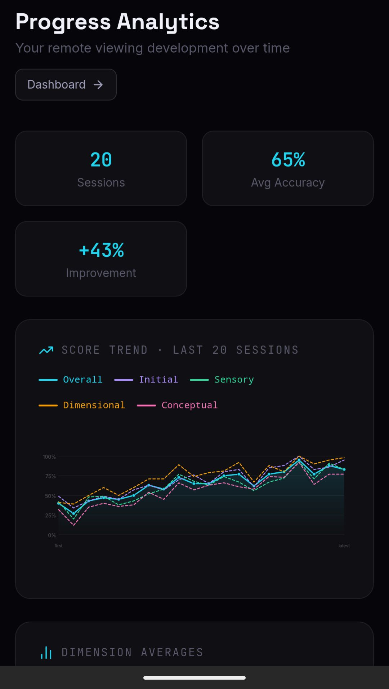
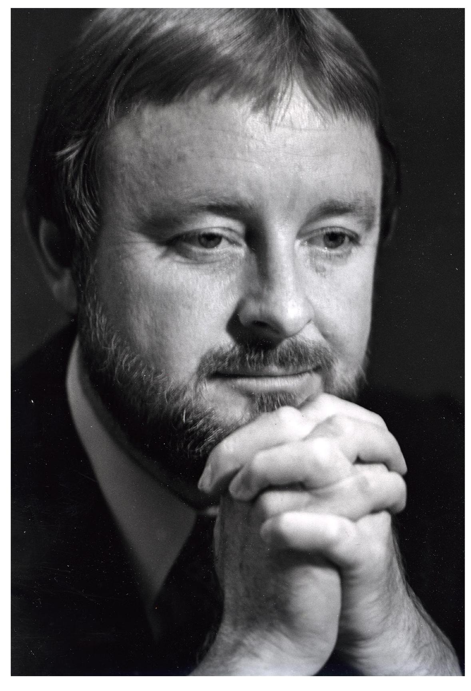

Most people who start looking into remote viewing arrive at the same dead end: a stack of books describing what CRV is, a handful of YouTube demonstrations, and no clear answer to the practical question of what to actually do when they sit down to practice. This article is for people past that point. You know the basics of the Controlled Remote Viewing protocol. You want to start training.
The distinction between reading about CRV and training it is not subtle. The protocol was developed as a skill-building system, not a theoretical framework. Ingo Swann's central claim was that anomalous cognition is trainable in the same way that other perceptual skills are trainable -- through repetition, structured feedback, and progressive difficulty. That claim was tested under funding from the CIA, the DIA, and the Army for over two decades. The data it produced is the closest thing to a validated training curriculum that exists in this field.
Training at a glance
- The session: a blind coordinate, then four phases (Initial, Sensory, Dimensional, Conceptual)
- The feedback: the target revealed after every session, scored across six dimensions
- The frequency: three to five sessions per week, kept short and disciplined
- First results: measurable gains in gestalt and signal-to-noise within four to eight weeks
- The variable that matters: not the protocol, the feedback loop
Why Structure Beats Unguided Practice
The intuitive approach to practicing remote viewing is to sit quietly, focus on something, and write down whatever comes to mind. This is not useless -- it does develop certain aspects of receptive attention -- but it has a fundamental problem: without a defined protocol, you cannot tell what your data means, and without consistent targets and scoring, you cannot tell whether you are improving.
Consider what Joe McMoneagle, one of the original Fort Meade remote viewers and arguably the most extensively documented viewer in the program's history, has said about his own development. McMoneagle did not learn remote viewing by sitting in a quiet room and waiting for impressions. He trained against specific targets, received immediate feedback, and had his sessions reviewed by monitors who could separate signal from noise in his transcripts. The protocol was the scaffold that made the skill legible.
Pat Price -- another early STARGATE viewer whose work at the Livermore nuclear facility and the Soviet research center at Semipalatinsk remains among the most operationally compelling cases in the program's declassified files -- came to the program with strong natural ability. But even Price worked within the protocol structure. When he didn't, his sessions were harder to evaluate and harder to use. The structure was not a constraint on talent; it was what made talent measurable.
This is the core argument for structured training: not that unguided practice produces nothing, but that it produces nothing you can measure. And if you cannot measure it, you cannot improve it deliberately.
What a Training Session Actually Involves
A structured CRV training session has a specific shape. Before you begin, you receive a coordinate -- a random numeric string that serves as the target's identifier. You know nothing about the target except that it exists and that the coordinate points to it. This blind design is not a formality. It is the mechanism that makes the session scientifically meaningful and the feedback meaningful. If you know what the target is before you respond, you are testing memory and inference, not anomalous cognition.
The session itself moves through four phases:
The Four Phases of a CRV Session
- Initial Impression: First contact with the target. You record a spontaneous, reflexive impression -- a gestalt of the target's basic nature. Land mass, water, built structure, biological life, energetic phenomenon. The goal is to capture first signal before the analytical mind engages.
- Sensory: You move through the target's sensory environment -- visual qualities (color, luminosity, texture, shape), sounds, temperatures, smells, tactile surfaces, spatial orientation. Everything is recorded as raw descriptors, not interpreted. "Blue, flat, cold, moving" rather than "ocean."
- Dimensional: Spatial and structural properties. Size relative to human scale, height, depth, angularity versus curvature. Simple sketches of dimensional relationships, not artistic renderings of the target.
- Conceptual: The richest and most contamination-prone phase. You access functional, emotional, and contextual information about the target. What happens here? What is the human relationship to this place or object? What is the quality of the space?

Throughout all four phases, you monitor for Analytical Overlay -- the moment your pattern-recognition faculty identifies what it thinks the target is and starts editing your raw data to fit that interpretation. AOL is declared and set aside; the session continues with raw perception. Learning to catch AOL in real time is one of the most practically valuable skills early training develops, and it transfers well beyond remote viewing sessions.
After you complete all four phases, the session ends and feedback is delivered: what the target actually was. This immediate feedback loop is not optional. It is the mechanism by which the training works. The brain needs to correlate its output with the ground truth before the next session begins.
Why Scoring Matters
The feedback loop of target reveal is necessary but not sufficient. You also need to know, in specific and consistent terms, how accurate your session was. This is where most informal remote viewing practice fails.
If you look at a target photograph after a session and think "well, some of that was right," you have learned almost nothing useful. You cannot track improvement on a feeling. You need scores across defined dimensions -- gestalt accuracy, sensory match, dimensional accuracy, conceptual accuracy, signal-to-noise ratio -- recorded consistently across sessions, so that you can see whether your gestalt is reliable while your sensory data is not, or whether your signal-to-noise improves over time even when accuracy per dimension stays flat.
The STARGATE program used human monitors for this work. Monitors reviewed viewer transcripts, separated AOL from signal, and scored sessions against standardized criteria. This was time-intensive, expensive, and required trained evaluators. It was also essential to the program's ability to make claims about viewer performance.
The practical problem for anyone training today is that human monitors are not available. This is the specific gap that AI scoring addresses. A language model can read your raw session transcript, compare it against the revealed target, and score your performance across the six dimensions that the STARGATE methodology used -- consistently, immediately, without fatigue, and without the social pressure that tends to inflate feedback when a human is reading your work. The scoring is not perfect, but it is consistent, and consistency is what training requires.
The Six Scoring Dimensions
- Gestalt accuracy: Did your first impression correctly identify the target's basic nature?
- Sensory accuracy: How well did your sensory descriptors match the target?
- Dimensional accuracy: Did your spatial and structural data correspond to the target?
- Conceptual accuracy: Were your functional and emotional impressions correct?
- Signal-to-noise ratio: What proportion of your session was on-target signal versus analytical overlay?
- Operational utility: If this session had been used for intelligence purposes, how useful would it have been?
Training Progression: Beginner to Advanced
The STARGATE training records and subsequent civilian instruction programs describe a reasonably consistent progression. The phases are not arbitrary -- each builds on the perceptual discipline established in the one before it.
Beginner: First-Contact and Sensory Precision (Sessions 1–25)
The primary goal of early training is not accuracy. It is learning to distinguish between first-contact signal and the analytical overlay that immediately follows it. Most new viewers are surprised by how quickly the mind generates an interpretation and how seamlessly it replaces raw perception with narrative. The skill being built here is interception -- catching that substitution as it happens.
Early sessions also calibrate your sensory channels. Most viewers have one or two channels that tend to be more reliable -- visual texture, temperature, or spatial orientation, for example -- and others that are habitually noisy. Identifying your reliable channels early gives you a better signal to work with in later sessions.
At the beginner level, sessions should be short. A full four-phase session takes 20 to 30 minutes when done properly. Cramming in too many impressions to fill a page, or spending so long on one phase that mental fatigue sets in, both degrade the quality of the data. Keep early sessions disciplined and stop when the session structure is complete, not when you feel like you've said enough.
Intermediate: Full Protocol and Pattern Recognition (Sessions 25–75)
By the intermediate stage, you are running complete four-phase sessions and beginning to see patterns in your scoring data. Some viewers find that their gestalt accuracy is strong -- they correctly identify the target's basic nature -- but their dimensional data is consistently off. Others find the reverse. These patterns are diagnostic. They tell you where your perceptual system is well-calibrated and where it is generating systematic error.
The intermediate stage is also where AOL management becomes active rather than reactive. Beginner training teaches you to catch and declare AOL when it occurs. Intermediate training teaches you to use AOL data productively -- noting it without letting it direct the session, and sometimes finding that AOL patterns across multiple sessions reveal something real about the target class you are working against.
Target diversity matters here. Practicing exclusively against natural landscape targets, for example, will not prepare you for architectural or human-activity targets. A good intermediate training regimen includes targets across multiple categories: natural settings, built structures, vehicles, abstract locations, events.
Advanced: Consistency and Operational Reliability (Sessions 75+)
Advanced CRV training is less about acquiring new techniques and more about developing consistency under varied conditions. The goal is to produce sessions where signal-to-noise is reliably high, where AOL is caught quickly, and where the scoring profile across sessions is stable enough to be predictive.
McMoneagle's STARGATE work, conducted over more than a decade, illustrates what this looks like in practice. His early sessions show the kind of partial accuracy and noisy conceptual data typical of intermediate-level viewers. His later sessions -- the ones used operationally, against real intelligence targets -- show a viewer who has learned when to trust his signal and when to stop. That calibration is the product of session count and feedback, not of any sudden perceptual breakthrough.
How Long Until You See Measurable Results
This is the question most people want answered honestly, and most training materials avoid answering directly. Here is what the evidence supports.
With consistent practice -- three to five sessions per week, with immediate feedback and scoring after each -- most trainees show measurable improvement in gestalt accuracy and signal-to-noise ratio within four to eight weeks. This is not the same as producing operationally reliable sessions. It means the training is working: your scores are moving in a consistent direction across multiple sessions, and you are producing specific correct data more often than chance would predict.
Sensory accuracy and dimensional accuracy typically lag behind gestalt by several weeks. Conceptual accuracy, because it is the phase most vulnerable to AOL contamination, often does not stabilize until three to four months of consistent practice. Viewers who show early gains in conceptual accuracy should be cautious: the phase is easy to inflate through wishful interpretation, and early high scores sometimes reflect confirmation bias rather than signal.
The honest answer to "how long" is that it depends almost entirely on session frequency and feedback quality. Two sessions per week with no scoring will produce no measurable improvement, regardless of how long you continue. Four sessions per week with immediate, consistent, multi-dimensional scoring will produce measurable changes within a month for most people. The protocol is not the variable. The feedback loop is the variable.
The protocol is not the variable. The feedback loop is the variable.
What Technology Changes, and What It Does Not
For most of remote viewing's history, structured practice required a second person: someone to select a target, seal it, and reveal it only after you finished writing. That logistical friction is largely gone. Web and mobile tools now hold large pools of blind targets, time your sessions, and reveal the correct image the moment you commit your impressions. You can train on your own schedule, work through targets matched to your level, and review every past session in one place. None of this makes the practice easier in the sense that actually matters, which is producing accurate impressions. But it does remove the excuses around getting reps in. A tight feedback loop, where you describe blind and then see the answer immediately, is the single most useful condition for learning the discipline of separating signal from imagination, and a laptop or a phone delivers it at a fraction of the effort the paper-and-monitor era demanded.

There is a second, quieter opportunity in these tools, and it points at research rather than at any individual's progress. The fairest serious assessment of the government program was the 1995 review commissioned by the CIA from the American Institutes for Research. Two specialists reached a split verdict. Jessica Utts, a statistician, concluded that by the standards applied to any other area of science the statistical effect was real and replicable across laboratories, with effect sizes she described as small-to-medium. Ray Hyman, a psychologist, accepted that the statistics were anomalous but argued the methodology was not yet strong enough to settle the question. Both agreed the results were too vague and inconsistent to be operationally useful, and the program was closed. What that history actually exposes is not a verdict but a shortage. The field has always worked from small, fragmented datasets gathered slowly under varying conditions. If a small-to-medium effect is what is on the table, the only way to see it clearly is many clean trials, because underpowered studies produce exactly the noisy, contradictory record that has fueled fifty years of argument. Tools that can run thousands of standardized, blind, well-logged sessions are, in principle, the instrument the field never had. App-based practice, gathered with consent, could assemble data at a scale the original program never approached.
We want to be precise about the word "clean," because scale cuts both ways. A large dataset only strengthens the science if the protocol is sound. The viewer must never be able to glimpse the target or its file before recording, target selection must be properly randomized, judging must be defined in advance, and sessions must be logged in a way that cannot be edited after the fact. Unsupervised online practice is vulnerable to the opposite of every one of those conditions, from sensory leakage to quietly discarding the misses. Ten thousand sloppy sessions are not evidence. They are confident noise. So we treat convenient practice and rigorous research as two different activities that happen to use similar tools. Casual training is for building the skill. Contributing to research requires enforced blinding, randomized target selection, pre-registered judging, and tamper-evident logging, and it is worth being explicit whenever a feature crosses from one into the other. If you want to try the structured, scored version of this loop for yourself, Psionic Training runs it on a laptop or phone.
"Anyone Can Do This" vs. "It Takes Training": An Honest Take
The civilian remote viewing world is divided between two camps that rarely engage honestly with each other. One camp holds that remote viewing ability is a universal human capacity that requires only the right conditions to express. The other holds that it is a rare gift that most people will never develop regardless of training.
The STARGATE program data does not strongly support either position. What it shows is more nuanced: most people can be trained to produce sessions where a statistically significant proportion of their data correctly describes the target. Not all of them, and not all the time -- but most people, more often than chance. What the program did not find is a reliable way to predict in advance which individuals would develop high-level operational ability. The distribution of viewer performance was roughly what you would expect from any training program: a small number of exceptional performers, a large middle range of solid functional viewers, and a tail of people who did not improve regardless of training.

Ingo Swann himself was clear that training does not create ability from nothing. It removes the habitual noise patterns that prevent existing perceptual capacity from expressing itself. That framing suggests a somewhat different question to ask at the start of training: not "am I capable of this?" but "what noise patterns am I running that are currently in the way?" The protocol, practiced consistently with real feedback, answers that question for you -- usually within the first twenty sessions.
For context on the documented history of the program that produced this methodology, see our overview of Project STARGATE.
What the 3-Instructor Approach Adds
Psionic Training structures practice around three AI instructors -- Akash, Lyra, and Veil -- who each represent a different orientation toward CRV work.
Akash guides viewers through the standard CRV protocol with emphasis on process discipline: sequential stage completion, AOL monitoring, and precise sensory data collection. This is the right starting point for anyone new to structured practice.
Lyra focuses on coherence and signal quality -- the internal calibration work that distinguishes a session where the viewer is genuinely on signal from one where they are pattern-matching against their own expectations. This work is more useful once you have a baseline understanding of the protocol structure.
Veil addresses advanced conceptual work: accessing functional, emotional, and contextual target information with lower AOL contamination. The sessions are more demanding and the targets more complex. The instructor approach here reflects the historical reality that different viewers benefit from different emphases in coaching, and that what accelerates progress for one viewer can create confusion for another.
The three-instructor structure is not mandatory sequencing. It is a set of available frameworks. Most trainees who start with Akash and move to Lyra after the first twenty sessions find the transition productive. Veil work benefits from a session base of at least fifty sessions, though the skill wall is not arbitrary -- it reflects the genuine difficulty of Stage 4 work done cleanly.
Starting Practice
The minimum viable training setup is: a blind target, four phases of structured data collection, immediate feedback, and consistent scoring across sessions. Everything else is optimization.
If you have been reading about remote viewing for months without starting, the delay is almost certainly not a knowledge gap. The protocol is simple enough to begin on day one. What most people are waiting for is a sense that they will be able to tell if it is working -- and that only comes from scoring data accumulated across actual sessions.
The only way to find out what your starting point is, and whether training is moving you, is to start and measure. Fifteen to twenty sessions of consistent four-phase work with immediate scored feedback will give you a genuine picture of your baseline performance and whether the protocol is having any effect.

Psionic Training provides structured CRV sessions, AI scoring across six dimensions, and progress tracking built on the declassified STARGATE methodology.
Begin Training →